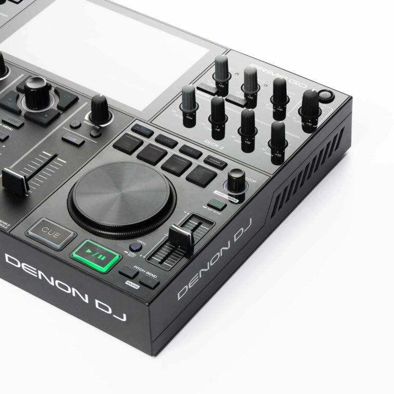

For Denon DJ hardware
Gig-ready USB
in seconds.
Alpha analyzes your music, builds a harmonically sequenced DJ set and writes it straight to your USB.
Alpha is a desktop app. Leave your email and we'll send the download link for when you're back at your Mac.
Before Alpha
- Rekordbox to DENON sucks
- Time-consuming playlist creation
- My USB was a mess
- Engine DJ sync & library issues
- Duplicate tracks on USB
- No harmonic sets
With Alpha
- One-click music analysis
- Harmonic track order suggestion
- No duplicates on your USB
- Backup before every write
Four steps
This is how
it works
Point Alpha at a folder, at several, or at just the tracks you pick. It reads BPM, key, energy and loudness locally — your audio never leaves your machine.
Energy arc
Pick a shapePick an energy arc or draw your own, and tell Alpha how long the night should run.
Two sliders decide the rest: how hard Alpha leans on harmonic transitions versus following your curve, and whether it matches neighbours more on key or on tempo.
Pre-listen every track, drag the bars to reorder them, and drop anything that doesn't fit.
Set a target loudness once — streaming, club, or your own number — and hear every track matched to it before you write anything.
Composition
Midnight_Banger_01
24 tracks · 2:58 · 87% harmonic · Journey arc
Write directly to your USB drive. Alpha formats the metadata and builds the Engine OS database so your set is gig-ready the moment you plug it into your Denon hardware.
It backs up the database before it touches anything, and tracks already on the drive get re-linked instead of copied twice.
Ready to try?
Free for macOS — your first 10 tracks are on us.
If you like it, you can buy a lifetime version for only €30 incl. VAT.
Alpha is a macOS desktop app. Leave your email and we'll send the download link for when you're back at your Mac.
Why Alpha?
Alpha was written by DJs who were tired of losing the afternoon before a gig to a USB stick. This wasn't a market we spotted — it was our own Saturday, gone, every single time.
Maybe there are other DJs out there with the same struggle.
Now go and play your banger set.
FAQ
What is Alpha actually doing?
It turns a folder of tracks into a USB stick your Denon gear is ready to play — analyzed, ordered and plugged in, instead of an evening of prep.
You point Alpha at your music. It reads tempo, key, energy and loudness straight out of the audio, on your own machine. You pick the energy arc the night should follow, and Alpha orders the set so neighboring tracks actually mix. Then it writes the playlist onto your drive and builds the Engine OS database your player expects — copying only what isn't on the stick yet, and levelling the tracks if you asked it to.
What it isn't: a library manager. Alpha doesn't want to own your collection or replace the tool you catalog in. It covers the stretch between “I've got these tracks” and “the stick is ready for tonight”.
Which DJ hardware does Alpha work with?
We built and tested Alpha specifically for the Denon DJ Prime Go. That's the machine every release is checked against.
Other hardware running Engine DJ / Engine OS reads the exact same drive format, so a stick Alpha writes works there too — among them the Prime 2, Prime 4, SC5000 and SC5000M, SC6000 and SC6000M, and Numark's Engine OS gear such as the Mixstream Pro.
Pioneer hardware isn't supported yet. rekordbox keeps its library in an encrypted database, which is a different problem from Engine OS — we're working on other formats, but today Alpha writes Denon Engine OS drives.
Your first 10 tracks are free, so the cheapest way to find out is to plug in your drive and try it.
We keep adding hardware and software compatibility — check your device.
What do I get in the free download?
The whole app — not a stripped-down demo. Analyse your music, build a sequenced set, write it to your Engine drive, plug it into your gear. The complete flow, end to end.
It's free for your first 10 tracks. That's one real set, on your own music, on your own hardware — enough to know whether Alpha is worth anything to you before you spend a cent. No card, no trial countdown.
What does Alpha cost?
Start free: your first 10 tracks are analyzed and exported at no cost, so you can run the full thing once before deciding anything.
Happy with it? Alpha is €30 incl. VAT, once. No subscription, no yearly renewal — you buy it and keep it, and new hardware support and fixes are included.
One licence covers one person on one device, and you can move it to a new machine yourself. Full details on the pricing page.
I've lost playlists after an Engine update before. Is my library safe?
Before Alpha writes to a stick, it copies that stick's Engine library to your own computer — not to the stick. So when an Engine update wipes the drive, your playlists are still sitting on your Mac.
To get them back, open the drive's playlists in Alpha and restore an earlier version. It happens on every write, so you don't have to remember to back up before you touch anything.
What's saved is the Engine library — your playlists and their order. Your audio files are your own copies and are never touched.
Can I manage the playlists already on my stick?
Yes. Plug the drive in and Alpha shows what's already on it — you can rename a playlist, delete one, or restore an earlier backed-up version of the whole library.
Deleting a playlist removes the playlist; it doesn't necessarily clear every audio file it pointed at off the drive.
I already have those tracks on the stick. Will Alpha copy them again?
No. Alpha checks what's already on the drive and re-links those files into the playlist instead of writing a second copy. Only genuinely new tracks get copied across.
That holds either way you work: start a brand-new playlist, or point Alpha at one that's already on the stick and append to it. When you extend, tracks that are already in that playlist are skipped and the new ones land at the end — the rest of your drive stays untouched.
So the same track can sit in three playlists without eating three times the space — and without you hunting down duplicates afterwards.
My collection is huge and Engine crawls. Will Alpha be just as slow?
Alpha isn't a library manager, so it never asks you to load your whole collection into it. You point it at the folder — or the handful of tracks — you want to play from, and it builds one gig-ready USB out of that.
Your archive stays exactly where it is, across as many drives as you like. Alpha only ever works through what you picked, so you wait for the tracks going into this set — not for your whole collection.
I organize my library in Lexicon. Does Alpha get in the way?
Not at all — that's exactly the setup Alpha is built for. Plenty of DJs already curate in Lexicon or something similar and only reach for Engine DJ to get tracks onto the controller.
Alpha takes over that last step. It reads the audio files on disk, so it doesn't care which tool you catalog them in, and it never wants to own your library.
What does Alpha analyze — and does it do energy levels?
Tempo, musical key in Camelot notation, an energy value and the loudness of every track — all computed by Alpha itself from your audio, not read out of someone else's tags.
Energy isn't a number you have to look at, either: it's what the arc in step 02 is built from.
What does “harmonically sequenced” actually mean?
Alpha takes the key, tempo and energy of every track and orders the set so that neighboring tracks mix cleanly and the whole thing follows the energy arc you picked — calm intro, build, peak, soft landing, or whatever shape you draw.
Do I have to stop using Engine DJ?
No. Alpha writes a normal Engine OS drive — your hardware reads it the way it reads any other stick, and Engine DJ still opens it. Alpha replaces the tedious prep, not your gear or your software.
Does Alpha do stems?
No. Stem separation stays with Engine DJ and your player. Alpha's job ends when your set is analyzed, sequenced and written to the drive.
Does my music leave my computer?
Your audio never does. Tempo, key, energy and loudness are analyzed locally on your own machine, and no audio file is ever uploaded.
Arranging the set happens on our servers, so the app sends the metadata of the tracks in your set — title, artist, tempo, key, energy, length — and gets the running order back. Details are on the privacy page.
Does Alpha change my audio files?
The files in your library: never. Analysis only reads them — no re-encoding, no rewriting of tags, no moving files around.
The copies on your USB stick: only if you ask for it. Alpha measures every track's loudness in LUFS while it analyzes, and if you tick Match loudness on export it bakes an equal-loudness gain into the copies it writes. The whole set then plays at one level on any player, so you are not riding the gain between songs. Peaks never go above -1 dB, so nothing clips.
That is a level adjustment, not mastering: no compressor, no limiter, no change to the dynamics of your tracks. Leave the box unticked and the files are copied exactly as they are.
Can Alpha download tracks from Spotify?
No — and it never will. Streaming audio is DRM-protected, and working around that is off the table for us. Alpha works with the audio files you already own.
Which platforms are supported?
macOS today. Windows and Linux are planned.